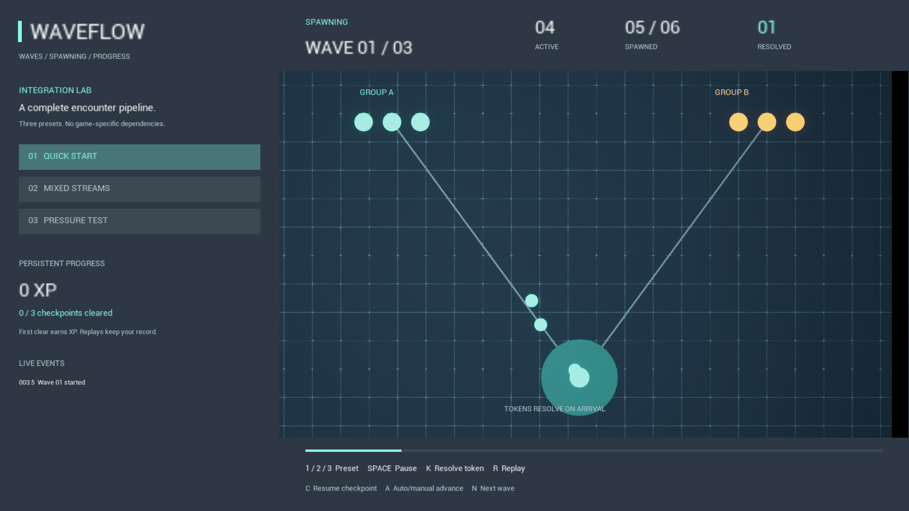

WaveFlow integration guide
A standalone wave, spawn and progress system. Connect your own actors and UI through Blueprint, with no required combat framework or custom GameState.
Explicit wave order, independent spawn streams and live population limits.
Named points and actor lifecycle events work across your levels.
Local campaign checkpoints and one-time XP rewards survive restarts.

First five minutes
- Enable WaveFlow in Edit → Plugins and restart the editor. For a source delivery, copy the WaveFlow folder into your C++ project's Plugins folder, regenerate project files and build the Editor target first.
- In the Content Browser settings, enable Show Plugin Content.
- Open
/WaveFlow/Maps/L_WaveFlowDemoand press Play. Click the viewport to give it keyboard focus. - Tokens spawn, travel to the collector and resolve. The HUD shows active, spawned and resolved counts. This is a lifecycle demonstration, not combat.
- Press 2 to see independently paced streams; 3 to see the active caps under load. Press Space to pause, then again to continue.
- Open
DA_QuickStartunder WaveFlow/Data to inspect the three waves. Duplicate the asset into your own Content folder before adapting it.
The map has its own GameMode override. It does not require project input settings, a character, a navigation mesh, Gameplay Ability System, paid content or a network service.
Integrate into your own level
- Create a Data Asset using Miscellaneous → Data Asset → WaveFlowSequence. Choose a stable, unique Campaign ID, such as
Arena01_v1. - Add at least one Wave and one Spawn Group. Assign a concrete spawnable Actor Class. You can use your Character, Pawn or Actor Blueprint.
- Place WaveFlow Spawn Point actors in the level. Set their Pool to the director's Spawn Pool and Group to the group's Spawn Point Group. Several points with the same group form a random selection pool.
- Place a WaveFlow Director and assign the sequence. Use Auto Start for a simple level. For event binding during BeginPlay, leave it off, bind events, then call Start Sequence.
- On Actor Spawned provides the actor and a Level integer. Cast to your enemy and initialize health, difficulty or visuals. WaveFlow does not interpret Level.
- At logical enemy death, get its Owner, cast to WaveFlow Director and call Resolve Actor. Leave Destroy Actor false if your game needs a ragdoll or pooling. If you destroy the actor normally, WaveFlow resolves it automatically.
- Bind On Changed to update a UMG widget. Bind On Wave Completed for sound or notifications and On Sequence Completed for victory.
Multiple directors can coexist. Give them different pools for independent spawn locations and different Campaign IDs for independent progress. The cap is per director, not world-wide.
Wave configuration
| Field | Behavior |
|---|---|
| Campaign ID | Persistent save identity. Change it when reordering waves in a shipped campaign. |
| Waves | Ordered array, no numeric DataTable row naming convention. API indices are zero-based; HUD/event wave numbers are one-based. |
| Delay Before | Countdown in seconds before the wave. Zero starts immediately. |
| Reward XP | Non-negative first-clear reward. Repeating a cleared wave cannot grant it again. |
| Actor Class / Level | Your spawnable actor class and a positive integer payload for your initialization code. |
| Spawn Point Group | Matches enabled points in the director's pool. No hard references to actors in a specific map. |
| Count / Max Alive | Total successful spawns and simultaneous active actors in this group. Caps apply per group even when classes match. |
| Initial Delay / Interval | Seconds after the wave starts until the first spawn, then between attempts. Interval must be at least 0.01 seconds. |
| Max Alive Total | Combined limit across all groups on this director. Groups are serviced in array order. |
| Max Spawn Retries | Consecutive failed spawn attempts before an actionable Failed state. Success resets this group's retry count. |
| Collision Handling | Defaults to adjusting spawn location and failing if blocked. Demo tokens have no collision and use Always Spawn. |
| Random Seed | Repeatable point choice with identical actor names, point availability, timing and resolution order. Not a cross-platform lockstep guarantee. |
Scheduling ticks at 20 Hz and spawns at most one actor per group per tick. A stall does not produce an unbounded catch-up burst. The interval is therefore a minimum spacing, not an exact real-time clock. Capped groups wait for capacity; they do not lose their remaining count. A wave completes only after every planned actor has spawned and all tracked actors have resolved.
The director snapshots wave definitions when starting. Changes to a sequence affect the next run. Spawn points are collected when starting; existing points can be enabled/disabled, but newly added points require a restart.
API and events
| Function | Use |
|---|---|
| Validate Setup | Checks the sequence, standalone mode, positive limits and available named points. Returns an error string. |
| Start Sequence(index = 0) | Clears the prior active encounter and starts at the specified index. An index equal to the wave count reports an already completed sequence. |
| Start From Checkpoint | Uses the first incomplete wave saved for this Campaign ID. Mid-wave actors are recreated, not restored. |
| Advance Wave | Moves on from BetweenWaves when Auto Advance is disabled. Cannot skip an active wave. |
| Set Encounter Paused | Freezes scheduling/countdown. Death notifications are still accepted. Generic actor AI and movement remain under your control. |
| Stop Encounter | Destroys still-tracked actors and returns to Idle. No reward for an unfinished wave. |
| Resolve Actor | Unregisters a tracked actor once; optional destruction. Does not destroy other actors, and cannot resolve the same actor twice. |
| Get Snapshot | Read state, wave number/count, planned/spawned/alive/resolved counters and countdown. |
| Event | Payload and timing |
|---|---|
| On Changed | A complete snapshot, on transitions and active ticks. Use for UI; do not perform disk writes on each update. |
| On Actor Spawned | Actor and Level, after successful spawn and registration. |
| On Wave Started / Completed | One-based wave number. Completion occurs once per wave in each run. |
| On Sequence Completed | All waves cleared, or resumed from an already complete checkpoint. |
| On Failed | A setup or runtime failure string. Active tracked actors are cleaned up. |
Idle → Countdown → Spawning → WaitingForClear
↓ all actors resolved
BetweenWaves → next Countdown
↓ final wave
Completed
Pause / Resume preserves the current scheduling state.
Stop → Idle. Invalid setup / exhausted retries → Failed.
Persistent progress
Get the WaveFlow Progress Game Instance subsystem. The default profile is WaveFlowProfile; the demo uses WaveFlowDemoProfile so it will not advance your game's campaign. Data is local Unreal SaveGame data, under the platform's Saved/SaveGames location.
- Load Profile(slot, user): select a profile between encounters. Missing slots start empty. Unreadable or unsupported saves are reported without overwriting them; the current loaded profile stays selected.
- Get Progress(campaign): completed indices, Experience (64-bit integer) and Next Wave Index. Checkpoints never skip an incomplete earlier wave.
- Record Wave: normally called by the director. Grants XP once for a campaign/wave pair and writes the small profile synchronously at wave boundaries.
- Save Profile: manually retry a failed save. Dirty remains true after failure.
- Reset Campaign: explicitly erase one campaign's progression and persist the change. Offer a confirmation in your own game UI before calling it.
- On Progress Changed / On Save Error: update UI and surface disk errors. A save failure does not stop gameplay or erase the in-memory reward.
Do not switch profiles in the middle of an encounter or inside progress callbacks. Only use one instance writing a given slot at a time. Saves are not encrypted, cloud synchronized or intended as cheat protection. Version 1 stores completed waves and XP; it does not restore active actors or create a skill tree.
Demo controls
| Key | Action |
|---|---|
| 1 / 2 / 3 | Quick Start / Mixed Streams / Pressure Test. Each has three editable waves and a separate Campaign ID. |
| Space | Pause/resume. The demo tokens voluntarily honor the director pause state. |
| K | Resolve one tracked token, simulating a death notification. |
| R | Replay from the first wave. Saved XP is not awarded again. |
| C | Resume the first incomplete checkpoint. Already cleared sequences display Complete. |
| A | Toggle automatic/manual advance. |
| N | Start the next wave when waiting between waves. |
BP_DemoTokenA and B are minimal examples derived from the native token actor. BP_DemoController holds hard references to all presets so they are available in cooked builds. BP_DemoGameMode selects this controller and the demonstration HUD. The map contains the director, spawn points, camera and simple schematic geometry.
Troubleshooting
| Symptom | Check |
|---|---|
| Plugin content is missing | Enable plugin and Show Plugin Content. Restart after enabling. |
| Cannot start / Failed | Read Last Error / On Failed. Check sequence, classes, matching pool/group, counts and positive intervals. Use standalone or PIE with one player and Net Mode Standalone. |
| Spawn retry limit reached | Move points clear of floors/walls; review the spawned actor's collision. Always Spawn is suitable only when overlapping actors are intentional. |
| Wave never ends | Resolve logical deaths if actors stay as ragdolls or return to a pool. Confirm all streams have finished spawning. Check the live counters. |
| Pause does not freeze enemies | The director pauses scheduling. Bind your movement/AI pause or use world pause for a full game pause. |
| Checkpoint immediately shows Complete | This campaign's waves were cleared already. R replays the demo; Reset Campaign erases the saved record deliberately. |
| Progress disappeared after changing ID | IDs are save namespaces. Restore the original ID to read its record. New ordering should use a new ID. |
| State-control node returns false in event | Schedule it with Delay Until Next Tick. Do not synchronously change state inside On Changed or other director events. |
| Source plugin will not load | Build using the same Unreal version and the required Visual Studio C++ toolchain. Do not copy editor binaries across engine versions. |
Support boundaries and contents
Version 1.0 targets Unreal Engine 5.8 on Windows x64, single-player standalone. Replication, multiplayer authority, navigation queries, enemy AI, combat, object pooling implementation, inventory, quests, cloud saves and mid-wave snapshots are outside this product. ResolveActor can integrate with an existing pool but WaveFlow's spawning creates actors normally.
The plugin contains a Runtime module, Blueprint examples, three Data Assets, one demo map, five original unlit materials and this guide. Geometry references Unreal Engine Basic Shapes; no paid third-party assets, downloaded fonts or Death Struggle art are redistributed.
For a support request, include engine version, platform, sequence configuration, Last Error, relevant Output Log and minimal reproduction steps. Contact timatisib@gmail.com.
WaveFlow · 1.0.0 · Documentation included offline